8.9 Improper Integrals¶
Guiding question
Every definite integral in Sections 8.1 to 8.8 was the integral of a continuous function over a closed interval of finite length. This section removes both restrictions. What could \(\int_1^\infty\frac{dx}{x^2}\) mean, when the region under the graph never ends, or \(\int_0^1\frac{dx}{\sqrt x}\), when the graph rises without bound at the left edge? The answer is a single idea, used in every case: replace the troublesome endpoint by a variable one, integrate on the closed interval that results, and take a limit. An improper integral is a limit and not a sum; it may converge to a number or diverge, and a computer that prints a decimal for it has printed an approximation. The section defines the two kinds of improper integral, settles the family \(\frac1{x^p}\) completely, proves the Comparison Test, the Limit Comparison Test and the fact that absolute convergence implies convergence (the proofs rest on Appendix C and the short Appendix N), explains why a doubly infinite integral must be split and why a symmetric limit is not the definition, shows how an interior singularity ruins a naive antiderivative, ties in the integrals of Sections 8.6 to 8.8 that have no elementary antiderivative, and ends with the Gamma-type integrals, Gabriel’s horn and the integrals of decay and probability.
By the end of this section you should be able to:
-
write an improper integral as a limit (or a sum of limits) and decide whether it converges, evaluating it when it does;
-
state and use the exact answer for \(\int_a^\infty x^{-p}\,dx\) and \(\int_0^a x^{-p}\,dx\), including the borderline case \(p=1\);
-
apply the Comparison Test and the Limit Comparison Test, and say which direction of the inequality proves convergence and which proves divergence;
-
explain why absolute convergence implies convergence, and give an integral that converges although its integrand does not tend to \(0\);
-
split a doubly infinite integral at any point, explain why the point does not matter, and explain why \(\lim_{t\to\infty}\int_{-t}^tf(x)\,dx\) is not the definition;
-
recognize an interior singularity, split there, and explain how a naive antiderivative or a naive substitution gives a wrong answer;
-
bracket a convergent improper integral with a comparison bound and compute the rest numerically, and say plainly that the result is an approximation;
-
use the Gamma-type integrals, the reduction formula, Gabriel’s horn and the integrals of decay and probability.
Two ways an integral can be improper¶
The integral \(\int_a^bf(x)\,dx\) of Calculus I is defined for a function that is continuous (or at least bounded) on a closed interval \([a,b]\) of finite length. Two things can go wrong, and they are the only two:
-
the interval is infinite, as in \(\int_1^\infty\frac{dx}{x^2}\);
-
the integrand is unbounded near a point of the interval, as in \(\int_0^1\frac{dx}{\sqrt x}\) (the integrand is not even defined at \(x=0\)).
In both cases the Riemann sums of Calculus I break down: there is no finite partition into pieces of finite width on which \(f\) is bounded. We keep what still makes sense. On every closed bounded interval inside the region, \(f\) is continuous and the integral exists, and we can ask what happens when that interval is pushed out to the troublesome endpoint.
An improper integral is a limit and not a sum
The symbol \(\int_1^\infty\frac{dx}{x^2}\) is shorthand for \(\lim_{b\to\infty}\int_1^b\frac{dx}{x^2}\). It is not “\(F(\infty)-F(1)\) with \(\infty\) plugged in as if it were a number”, and the existence of the limit is a question, not a given. Whenever the antiderivative is evaluated at an endpoint where something is wrong, write \(\lim\). Likewise, a decimal printed for a convergent improper integral is an approximation: we write \(\approx\), and when the exact value is not available we give the approximation together with a bound for its error (Example 8.9.24).
Definition 8.9.1: Improper integrals over infinite intervals
(1) If \(f\) is continuous on \([a,\infty)\), then \(\displaystyle\int_a^\infty f(x)\,dx=\lim_{b\to\infty}\int_a^bf(x)\,dx\).
(2) If \(f\) is continuous on \((-\infty,b]\), then \(\displaystyle\int_{-\infty}^bf(x)\,dx=\lim_{a\to-\infty}\int_a^bf(x)\,dx\).
(3) If \(f\) is continuous on \((-\infty,\infty)\), then for any real number \(c\),
If the limit exists as a real number, the improper integral converges and the limit is its value; otherwise it diverges. In case (3) the integral converges only if both limits exist, and the two limits are taken independently: \(a\) and \(b\) do not move together. (Theorem 8.9.10 shows that the choice of \(c\) does not matter.)
Definition 8.9.2: Improper integrals with an unbounded integrand
(1) If \(f\) is continuous on \((a,b]\), then \(\displaystyle\int_a^bf(x)\,dx=\lim_{c\to a^+}\int_c^bf(x)\,dx\).
(2) If \(f\) is continuous on \([a,b)\), then \(\displaystyle\int_a^bf(x)\,dx=\lim_{c\to b^-}\int_a^cf(x)\,dx\).
(3) If \(f\) is continuous on \([a,b]\) except at one point \(p\) with \(a<p<b\), then
Converges and diverges mean the same as before, and in case (3) both limits must exist, taken independently (\(c\) and \(d\) approach \(p\) separately). A point such as \(a\), \(b\) or \(p\) at which \(f\) is not defined or not continuous is a singularity.
Some remarks that save mistakes. (i) If \(f\) has a finite limit at the singularity (for example \(\frac{\sin x}x\) at \(x=0\)), then \(f\) extends to a continuous function on the closed interval, the integral is an ordinary one, and the limit in Definition 8.9.2 equals it, because \(c\mapsto\int_c^bf\) is continuous by the Fundamental Theorem of Calculus. Such a “singularity” is not improper. (ii) An integral can be improper for two reasons at once (for example \(\int_0^\infty\frac{dx}{\sqrt x(1+x)}\), Example 8.9.7); then it is cut into pieces, each with only one trouble spot, and it converges exactly when every piece converges. (iii) When the integrand is non-negative and the limit is \(+\infty\) we write \(\int=\infty\) and say the integral diverges to infinity. That is a statement about a limit, and \(\infty\) is not the value of a convergent integral. (iv) Some integrals diverge without going to \(\pm\infty\): the limit can fail to exist because of oscillation (Example 8.9.3(c)).
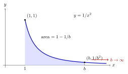
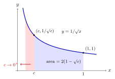
Figure 1. Left: \(\int_1^\infty\frac{dx}{x^2}\). The region under \(y=\frac1{x^2}\) from \(1\) to \(b\) has area \(1-\frac1b\) (for \(b=4\) the point \((4,\frac1{16})\) is marked), and the \(x\)-axis is a horizontal asymptote. Right: \(\int_0^1\frac{dx}{\sqrt x}\). The region from \(c\) to \(1\) has area \(2(1-\sqrt c)\) (for \(c=\frac14\) the area is \(1\)), and the \(y\)-axis is a vertical asymptote. In both pictures the limit is taken by pushing the variable endpoint out to the trouble spot.
Example 8.9.3: Infinite intervals by the definition
Evaluate or show divergence: (a) \(\displaystyle\int_1^\infty\frac{dx}{x^2}\), (b) \(\displaystyle\int_{-\infty}^0e^{2x}\,dx\), (c) \(\displaystyle\int_0^\infty\cos x\,dx\).
Solution. (a) The integrand is continuous on \([1,\infty)\), so Definition 8.9.1(1) applies. For \(b>1\), \(\int_1^bx^{-2}\,dx=\left[-\frac1x\right]_1^b=1-\frac1b\). As \(b\to\infty\), \(\frac1b\to0\), so the limit is \(1\):
The integral converges, and the region of Figure 1 (left), which stretches forever to the right, has area exactly \(1\).
(b) Definition 8.9.1(2): for \(a<0\), \(\int_a^0e^{2x}\,dx=\left[\frac{e^{2x}}2\right]_a^0=\frac12-\frac{e^{2a}}2\). As \(a\to-\infty\), \(2a\to-\infty\) and \(e^{2a}\to0\), so
(c) For \(b>0\), \(\int_0^b\cos x\,dx=\sin b\). The limit of \(\sin b\) as \(b\to\infty\) does not exist: along \(b=n\pi\) the values are all \(0\), and along \(b=2n\pi+\frac\pi2\) they are all \(1\). So the integral diverges, and it does not diverge to \(\infty\) or \(-\infty\); it oscillates. (The areas above and below the axis keep cancelling, but “cancelling” is not convergence.)
Example 8.9.4: Unbounded integrands by the definition
Evaluate or show divergence: (a) \(\displaystyle\int_0^1\frac{dx}{\sqrt x}\), (b) \(\displaystyle\int_2^{10}\frac{dx}{(x-2)^{2/3}}\), (c) \(\displaystyle\int_0^{\pi/2}\tan x\,dx\).
Solution. (a) The integrand is continuous on \((0,1]\) and unbounded as \(x\to0^+\), so Definition 8.9.2(1) applies. For \(0<c<1\), \(\int_c^1x^{-1/2}\,dx=\left[2\sqrt x\right]_c^1=2-2\sqrt c\). As \(c\to0^+\), \(\sqrt c\to0\):
This is the area of the region at the right of Figure 1: it is finite, although the region is unbounded above.
(b) The integrand is continuous on \((2,10]\) and unbounded as \(x\to2^+\). For \(2<c<10\), with the antiderivative \(3(x-2)^{1/3}\) (the derivative is \((x-2)^{-2/3}\)),
The value is \(6\).
(c) The integrand is continuous on \(\left[0,\frac\pi2\right)\) and \(\tan x\to\infty\) as \(x\to\frac\pi2^-\). For \(0<c<\frac\pi2\), \(\int_0^c\tan x\,dx=\left[-\ln\cos x\right]_0^c=-\ln\cos c\) (\(\cos x>0\) on this interval, so no absolute value is needed). As \(c\to\frac\pi2^-\), \(\cos c\to0^+\), so \(-\ln\cos c\to+\infty\): the integral diverges (to \(\infty\)).
Knowledge Check 8.9.1: Is it improper?
Which of these are improper integrals, and for each one say why? (a) \(\displaystyle\int_0^1\frac{\sin x}x\,dx\); (b) \(\displaystyle\int_0^\pi\tan x\,dx\); (c) \(\displaystyle\int_{-1}^1\frac{dx}{x^2+1}\); (d) \(\displaystyle\int_1^\infty\frac{dx}{x^2+1}\).
The \(p\)-integrals: a complete answer¶
The functions \(\frac1{x^p}\) decide most convergence questions, because the tests below compare other integrands with them. The next theorem settles every \(p\), at infinity and at \(0\), including the borderline \(p=1\).
Theorem 8.9.5: The \(p\)-integrals
Let \(a>0\) and let \(p\) be a real number.
(1) \(\displaystyle\int_a^\infty\frac{dx}{x^p}\) converges if \(p>1\), and then equals \(\dfrac{a^{1-p}}{p-1}\); it diverges to \(\infty\) if \(p\le1\).
(2) \(\displaystyle\int_0^a\frac{dx}{x^p}\) converges if \(p<1\), and then equals \(\dfrac{a^{1-p}}{1-p}\); it diverges to \(\infty\) if \(p\ge1\).
Proof. (1) Let \(b>a\). If \(p\ne1\), then \(\int_a^bx^{-p}\,dx=\dfrac{b^{1-p}-a^{1-p}}{1-p}\) (the power rule). If \(p>1\) then \(1-p<0\), so \(b^{1-p}=\frac1{b^{p-1}}\to0\) as \(b\to\infty\), and the limit is \(\frac{-a^{1-p}}{1-p}=\frac{a^{1-p}}{p-1}\). If \(p<1\) then \(1-p>0\), \(b^{1-p}\to\infty\), and the integral diverges to \(\infty\). If \(p=1\), \(\int_a^b\frac{dx}x=\ln b-\ln a\to\infty\).
(2) Let \(0<c<a\). If \(p\ne1\), then \(\int_c^ax^{-p}\,dx=\dfrac{a^{1-p}-c^{1-p}}{1-p}\). If \(p<1\) then \(1-p>0\) and \(c^{1-p}\to0\) as \(c\to0^+\), so the limit is \(\frac{a^{1-p}}{1-p}\). If \(p>1\) then \(c^{1-p}=\frac1{c^{p-1}}\to\infty\) and the integral diverges to \(\infty\) (the numerator tends to \(-\infty\) and \(1-p<0\)). If \(p=1\), \(\int_c^a\frac{dx}x=\ln a-\ln c\to\infty\). \(\blacksquare\) ◻ ∎
For instance \(\int_4^\infty x^{-3/2}\,dx=\frac{4^{-1/2}}{1/2}=1\) and \(\int_0^8x^{-1/3}\,dx=\frac{8^{2/3}}{2/3}=6\). The same results hold when the singularity is not at \(0\): with \(u=x-a\) (or \(u=b-x\)) the integrals \(\int_a^b(x-a)^{-p}\,dx\) and \(\int_a^b(b-x)^{-p}\,dx\) become \(\int_0^{b-a}u^{-p}\,du\) and converge exactly when \(p<1\).
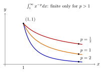
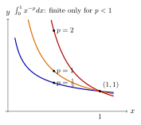
Figure 2. The family \(y=x^{-p}\) for \(p=\frac12\), \(1\), \(2\). Left, on \([1,\infty)\): for \(p=2\) (blue) the area is finite (\(=1\)), for \(p=1\) and \(p=\frac12\) (orange, red) it is infinite. Right, on \((0,1]\): for \(p=\frac12\) (blue) the area is finite (\(=2\)), for \(p=1\) and \(p=2\) it is infinite. The curve with \(p=1\) is the borderline in both pictures.
Knowledge Check 8.9.2: The borderline
Decide whether each converges, and give the value if it does: (a) \(\displaystyle\int_1^\infty x^{-0.99}\,dx\), (b) \(\displaystyle\int_0^1x^{-0.99}\,dx\), (c) \(\displaystyle\int_1^\infty x^{-1.01}\,dx\).
Pause and think 8.9.1: No power works on the whole half-line
Theorem 8.9.5 treats \(\int_a^\infty\) and \(\int_0^a\) separately. Explain why \(\int_0^\infty x^{-p}\,dx\) diverges for every real \(p\). Then explain why \(\int_0^\infty\frac{dx}{\sqrt x(1+x)}\) (Example 8.9.7) is not a contradiction.
Answer and discussion
Split at \(1\): \(\int_1^\infty x^{-p}\) converges only if \(p>1\), and \(\int_0^1x^{-p}\) converges only if \(p<1\); no \(p\) does both, so one of the two pieces always diverges, and so does the integral over \((0,\infty)\). Example 8.9.7 is not a power: near \(0\) it behaves like \(x^{-1/2}\) (\(p<1\)) and near \(\infty\) like \(x^{-3/2}\) (\(p>1\)), each piece converges, and the value is \(\pi\).
Integration techniques inside the limit¶
Every technique of Sections 8.1 to 8.7 works inside the limit: find an antiderivative (or use the substitution rule on the closed interval where it is valid), evaluate on the closed interval, and then take the limit. The limit is where the question is decided.
Example 8.9.6: A logarithm at \(0\) and a logarithm at infinity
Evaluate (a) \(\displaystyle\int_0^1\ln x\,dx\) and (b) \(\displaystyle\int_2^\infty\frac{dx}{x(\ln x)^2}\).
Solution. (a) \(\ln x\) is continuous on \((0,1]\) and tends to \(-\infty\) as \(x\to0^+\). By parts (Theorem 8.2.5), \(\int\ln x\,dx=x\ln x-x+C\). For \(0<c<1\),
Now \(c\to0^+\). The term \(c\to0\), and \(c\ln c=\dfrac{\ln c}{1/c}\) is of the form \(\frac{-\infty}\infty\), so by L’Hôpital’s Rule \(\lim_{c\to0^+}\frac{1/c}{-1/c^2}=\lim_{c\to0^+}(-c)=0\). Hence
The answer is negative because \(\ln x<0\) on \((0,1)\): the region lies below the axis.
(b) The integrand is continuous and positive on \([2,\infty)\). Substitute \(u=\ln x\), \(du=\frac{dx}x\) (Section 8.1): \(\int\frac{dx}{x(\ln x)^2}=\int\frac{du}{u^2}=-\frac1u+C=-\frac1{\ln x}+C\). For \(b>2\),
because \(\ln b\to\infty\). So the integral converges, to \(\frac1{\ln2}\approx1.4427\). Check by differentiating: \(\frac d{dx}\left(-\frac1{\ln x}\right)=\frac1{x(\ln x)^2}\). (Compare \(\int_2^\infty\frac{dx}{x\ln x}\): the same substitution gives \(\ln\ln b-\ln\ln2\to\infty\), so that one diverges. Two integrands that look almost the same can behave differently; a later chapter returns to exactly this pair.)
Example 8.9.7: Two troubles at once
Evaluate (a) \(\displaystyle\int_1^4\frac{dx}{\sqrt{(x-1)(4-x)}}\) and (b) \(\displaystyle\int_0^\infty\frac{dx}{\sqrt x\,(1+x)}\).
Solution. (a) The integrand is continuous on \((1,4)\) and unbounded at both ends. Cut the interval at the midpoint \(\frac52\) (any interior point would do): the integral converges exactly when both \(\int_1^{5/2}\) and \(\int_{5/2}^4\) do. Complete the square (Theorem 8.7.5): \((x-1)(4-x)=-x^2+5x-4=\frac94-\left(x-\frac52\right)^2\). By the inverse sine formula (Theorem 8.1.6) with \(a=\frac32\),
For \(1<c<\frac52\): \(\int_c^{5/2}=\sin^{-1}0-\sin^{-1}\frac{2c-5}3\to0-\sin^{-1}(-1)=\frac\pi2\) as \(c\to1^+\) (the inverse sine is continuous at \(-1\)). For \(\frac52<d<4\): \(\int_{5/2}^d=\sin^{-1}\frac{2d-5}3-0\to\sin^{-1}1=\frac\pi2\) as \(d\to4^-\). Both halves converge, so
(b) The integral is improper at \(0\) (the integrand is unbounded) and at \(\infty\) (the interval is infinite). Cut at \(1\): \(\int_0^1+\int_1^\infty\). For \(0<c<b\) let \(u=\sqrt x\), \(x=u^2\), \(dx=2u\,du\) (the substitution is one-to-one on \([c,b]\) with \(c>0\)):
Then \(\int_c^1=2\tan^{-1}1-2\tan^{-1}\sqrt c\to\frac\pi2-0=\frac\pi2\) as \(c\to0^+\), and \(\int_1^b=2\tan^{-1}\sqrt b-\frac\pi2\to\pi-\frac\pi2=\frac\pi2\) as \(b\to\infty\). Both pieces converge, so
Notice that the integrand behaves like \(x^{-1/2}\) near \(0\) (convergent end) and like \(x^{-3/2}\) near \(\infty\) (convergent end); this is why neither end causes trouble.
Antiderivatives, interior singularities and breaks¶
Theorem 8.7.14 said how to evaluate \(\int_a^bf\) when \(f\) is continuous on \([a,b]\) but a formula for an antiderivative has a break inside. If the singularity is in the integrand, a new phenomenon appears: the one-sided limits of \(F\) at the singular point may be infinite, and then there is no integral at all. This is the improper version of the theorem.
Theorem 8.9.8: Antiderivatives and improper integrals
Let \(f\) be continuous on \([a,b]\) except at one point \(p\) with \(a<p<b\), where it may be unbounded, and let \(F\) be differentiable with \(F'=f\) on \([a,p)\) and on \((p,b]\). Then
(1) \(\int_a^pf\) converges if and only if the limit \(F(p^-)=\lim_{x\to p^-}F(x)\) exists as a real number, and then \(\int_a^pf=F(p^-)-F(a)\);
(2) \(\int_p^bf\) converges if and only if \(F(p^+)=\lim_{x\to p^+}F(x)\) exists as a real number, and then \(\int_p^bf=F(b)-F(p^+)\);
(3) consequently \(\int_a^bf\) converges if and only if both one-sided limits exist as real numbers, and then
The naive value \(F(b)-F(a)\) is correct exactly when \(F(p^+)=F(p^-)\), that is, when \(F\) extends continuously across \(p\); if one of the one-sided limits is \(\pm\infty\) or does not exist, the integral diverges.
The same argument shows \(\int_a^\infty f=\lim_{b\to\infty}F(b)-F(a)\) when \(F'=f\) on \([a,\infty)\), the integral converging if and only if the limit is a real number.
Proof. (1) For \(a\le x<p\) the function \(F\) is differentiable on \([a,x]\) with continuous derivative \(f\), so \(\int_a^xf=F(x)-F(a)\) by the Fundamental Theorem of Calculus. Hence \(\lim_{x\to p^-}\int_a^xf\) exists exactly when \(\lim_{x\to p^-}F(x)\) does, and the two limits differ by the constant \(F(a)\). (2) is the same with \(\int_x^bf=F(b)-F(x)\) for \(p<x\le b\). (3) By Definition 8.9.2(3), \(\int_a^bf\) converges exactly when the integrals in (1) and (2) both converge, and the value is their sum, \(F(p^-)-F(a)+F(b)-F(p^+)\). The final statement is the same computation with \(b\to\infty\). \(\blacksquare\) ◻ ∎
When \(f\) is continuous on all of \([a,b]\), \(F\) is too, so the one-sided limits exist and Theorem 8.7.14 is the case in which they differ only by a jump of the formula. When \(f\) is unbounded at \(p\), the formula \(F\) itself can blow up, and a missing check gives answers that are not just off by a constant but meaningless.
Example 8.9.9: A singularity in the middle of the interval
Evaluate or show divergence, and find what the naive computation gives: (a) \(\displaystyle\int_{-1}^3\frac{dx}{(x-1)^2}\); (b) \(\displaystyle\int_{-1}^1\frac{dx}x\); (c) \(\displaystyle\int_{-1}^8\frac{dx}{x^{2/3}}\).
Solution. (a) The integrand is unbounded at \(p=1\), inside \([-1,3]\), so the integral must be cut there. An antiderivative on each side is \(F(x)=-\frac1{x-1}\). As \(x\to1^-\), \(x-1\to0^-\) and \(F(x)\to+\infty\), so by Theorem 8.9.8(1) already \(\int_{-1}^1\frac{dx}{(x-1)^2}\) diverges, and therefore so does the whole integral (to \(+\infty\), since the integrand is positive). The naive evaluation \(F(3)-F(-1)=-\frac12-\frac12=-1\) is nonsense: a positive integrand cannot have a negative integral. This is the integral flagged in Example 8.7.16.
(b) Here \(F(x)=\ln\lvert x\rvert\) is an antiderivative on each side of \(0\), and \(F(0^\pm)=-\infty\). By Theorem 8.9.8 the integral diverges. The naive value \(F(1)-F(-1)=\ln1-\ln1=0\) is wrong. To see what the definition does, let \(c\) and \(d\) approach \(0\) independently: \(\int_{-1}^{-c}\frac{dx}x=\ln c\) and \(\int_d^1\frac{dx}x=-\ln d\), so the sum is \(\ln c-\ln d=\ln\frac cd\). With \(c=d\) this is \(0\) for every \(d\) (the “symmetric limit”), but with \(c=e^5d\) it is \(5\) for every \(d\), and with \(c=d^2\) it is \(\ln d\to-\infty\). The two limits do not combine into a single number. (The symmetric value \(0\) is called a principal value. It is useful in some applications, and it is not the value of the improper integral.)
(c) The integrand is \(x^{-2/3}=\lvert x\rvert^{-2/3}\) (the real cube root of \(x\) is used, so the integrand is positive and even), unbounded at \(0\). Here \(F(x)=3x^{1/3}\) (the real cube root) is an antiderivative on each side, and \(F\) is continuous at \(0\) with \(F(0^-)=F(0^+)=0\). By Theorem 8.9.8(3) the integral converges and the naive value is right:
As a check, the two halves are \(\int_{-1}^0=\int_0^1x^{-2/3}\,dx=3\) (even integrand, Theorem 8.9.5(2) with \(p=\frac23\)) and \(\int_0^8x^{-2/3}\,dx=6\), and \(3+6=9\). So an interior singularity is not always fatal: what matters is whether \(F\) has finite one-sided limits there.
A jump at the singularity. A program may return an antiderivative with a different constant on each side. For \(f(x)=x^{-2/3}\) the function \(G(x)=3x^{1/3}\) for \(x>0\) and \(G(x)=3x^{1/3}+5\) for \(x<0\) is an antiderivative on each side. It has \(G(0^-)=5\), \(G(0^+)=0\), so the jump is \(G(0^+)-G(0^-)=-5\). The naive value is \(G(8)-G(-1)=6-2=4\) and the correct value, by Theorem 8.9.8(3), is \(4-(-5)=9\).
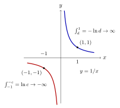
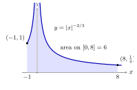
Figure 3. Interior singularities. Left: \(y=\frac1x\) has infinite area on each side of the vertical asymptote \(x=0\) (blue above the axis, red below), so \(\int_{-1}^1\frac{dx}x\) diverges, although the signed areas “cancel” in the symmetric limit. Right: \(y=\lvert x\rvert^{-2/3}\) also has a vertical asymptote at \(0\), but its area is finite: \(3\) on \([-1,0]\) and \(6\) on \([0,8]\), total \(9\) (Example 8.9.9(c)).
Doubly infinite integrals: split anywhere, but split¶
Definition 8.9.1(3) cuts \(\int_{-\infty}^\infty\) at a number \(c\) and asks that each half converge on its own. The number \(c\) is arbitrary, and it must be, because nothing in the problem singles one out. The next theorem says that the choice cannot change the verdict or the value.
Theorem 8.9.10: The split point does not matter
Let \(f\) be continuous on \((-\infty,\infty)\) and let \(c\) and \(c'\) be real numbers. Then \(\int_{-\infty}^cf\) and \(\int_c^\infty f\) both converge if and only if \(\int_{-\infty}^{c'}f\) and \(\int_{c'}^\infty f\) both converge, and in that case
Proof. Let \(k=\int_c^{c'}f(x)\,dx\), an ordinary integral and a real number. For every \(a<\min\{c,c'\}\) additivity of ordinary integrals gives \(\int_a^{c'}f=\int_a^cf+k\), so \(\lim_{a\to-\infty}\int_a^{c'}f\) exists exactly when \(\lim_{a\to-\infty}\int_a^cf\) does, and \(\int_{-\infty}^{c'}f=\int_{-\infty}^cf+k\). For every \(b>\max\{c,c'\}\), \(\int_{c'}^bf=\int_c^bf-k\), so \(\int_{c'}^\infty f\) converges exactly when \(\int_c^\infty f\) does, and \(\int_{c'}^\infty f=\int_c^\infty f-k\). Adding, \(k\) cancels. \(\blacksquare\) ◻ ∎
Example 8.9.11: A doubly infinite integral and two split points
Evaluate \(\displaystyle\int_{-\infty}^\infty\frac{dx}{x^2+4x+13}\), splitting first at \(c=-2\) and then at \(c=0\).
Solution. Complete the square: \(x^2+4x+13=(x+2)^2+9\). By Theorem 8.1.13 (or the substitution \(u=\frac{x+2}3\)),
Recall \(\tan^{-1}u\to\frac\pi2\) as \(u\to\infty\) and \(\to-\frac\pi2\) as \(u\to-\infty\), so \(F(x)\to\frac\pi6\) as \(x\to\infty\) and \(F(x)\to-\frac\pi6\) as \(x\to-\infty\).
Split at \(c=-2\) (where \(F(-2)=\frac13\tan^{-1}0=0\)): \(\int_{-\infty}^{-2}=F(-2)-\lim_{a\to-\infty}F(a)=0-\left(-\frac\pi6\right)=\frac\pi6\), and \(\int_{-2}^\infty=\lim_{b\to\infty}F(b)-F(-2)=\frac\pi6\). Both converge, and the sum is \(\frac\pi3\).
Split at \(c=0\) (where \(F(0)=\frac13\tan^{-1}\frac23\)): \(\int_{-\infty}^0=\frac13\tan^{-1}\frac23+\frac\pi6\) and \(\int_0^\infty=\frac\pi6-\frac13\tan^{-1}\frac23\). Both converge, and the sum is again
The piece \(\frac13\tan^{-1}\frac23\) appears with opposite signs and cancels, exactly as Theorem 8.9.10 says: the half-line values depend on \(c\), the total does not. The value is \(\frac\pi3\approx1.047\), and it agrees with sympy’s \(\int_{-\infty}^{\infty}=\frac\pi3\).
The symmetric limit is not the definition¶
A tempting shortcut replaces the two independent limits by one: \(\lim_{t\to\infty}\int_{-t}^tf(x)\,dx\), where both ends move out together. When \(f\) is odd this limit is \(0\) for free, which is why the shortcut is so attractive. The next theorem says exactly when it is legitimate.
Theorem 8.9.12: Even and odd integrands, and the symmetric limit
Let \(f\) be continuous on \((-\infty,\infty)\).
(1) For every \(t>0\): \(\int_{-t}^0f(x)\,dx=\int_0^tf(-u)\,du\). Hence if \(f\) is odd, \(\int_{-t}^tf=0\); if \(f\) is even, \(\int_{-t}^tf=2\int_0^tf\).
(2) If \(f\) is odd: \(\int_{-\infty}^\infty f\) converges if and only if \(\int_0^\infty f\) converges, and then \(\int_{-\infty}^\infty f=0\). If \(\int_0^\infty f\) diverges, then \(\int_{-\infty}^\infty f\) diverges, even though \(\lim_{t\to\infty}\int_{-t}^tf=0\).
(3) If \(f\) is even: \(\int_{-\infty}^\infty f\) converges if and only if \(\int_0^\infty f\) converges, and then \(\int_{-\infty}^\infty f=2\int_0^\infty f\).
(4) For every continuous \(f\): if \(\int_{-\infty}^\infty f\) converges, then \(\lim_{t\to\infty}\int_{-t}^tf\) exists and equals it. The converse is false.
Proof. (1) Substitute \(x=-u\), \(dx=-du\) in \(\int_{-t}^0f(x)\,dx\): \(x=-t\) corresponds to \(u=t\) and \(x=0\) to \(u=0\), so the integral is \(\int_{u=t}^{u=0}f(-u)(-du)=\int_0^tf(-u)\,du\). If \(f\) is odd, \(f(-u)=-f(u)\), so \(\int_{-t}^0f=-\int_0^tf\) and \(\int_{-t}^tf=\int_{-t}^0f+\int_0^tf=0\); if \(f\) is even, \(f(-u)=f(u)\) and \(\int_{-t}^tf=2\int_0^tf\).
(2) For \(f\) odd, \(\int_a^0f=-\int_0^{-a}f\) for \(a<0\), by (1) with \(t=-a\). As \(a\to-\infty\) we have \(-a\to\infty\), so \(\int_{-\infty}^0f\) converges if and only if \(\int_0^\infty f\) does, and then \(\int_{-\infty}^0f=-\int_0^\infty f\). The doubly infinite integral converges only if both halves do, which happens exactly when \(\int_0^\infty f\) converges, and then the total is \(-A+A=0\) with \(A=\int_0^\infty f\). If \(\int_0^\infty f\) diverges, so does \(\int_{-\infty}^0f\), and the doubly infinite integral diverges; but \(\int_{-t}^tf=0\) for every \(t\) by (1).
(3) The same argument with \(\int_a^0f=+\int_0^{-a}f\) gives \(\int_{-\infty}^0f=\int_0^\infty f\), hence the total \(2\int_0^\infty f\).
(4) For every \(t\), \(\int_{-t}^tf=\int_{-t}^0f+\int_0^tf\), and as \(t\to\infty\) the two terms tend to \(\int_{-\infty}^0f\) and \(\int_0^\infty f\), which are the two halves of the integral (case \(c=0\) of Definition 8.9.1(3)). The converse fails by (2): for \(f(x)=x\) the symmetric limit is \(0\) but the integral diverges (Example 8.9.13). \(\blacksquare\) ◻ ∎
So the shortcut \(\lim\int_{-t}^t\) gives the right answer when the integral is already known to converge, and it can give a number for an integral that diverges. The following example is the standard test of whether this distinction has sunk in.
Example 8.9.13: The interesting example: does \(\int_{-\infty}^\infty x\,dx\) converge?
(a) Determine whether the improper integral \(\displaystyle\int_{-\infty}^\infty x\,dx\) converges or diverges using (1) the definition (Definition 8.9.1(3)); (2) the limit \(\displaystyle\lim_{t\to\infty}\int_{-t}^tx\,dx\). Compare the two answers. (b) A student substitutes \(u=1+x^2\) in \(\displaystyle\int_{-\infty}^\infty\frac{x}{1+x^2}\,dx\) and gets \(0\). What is wrong?
Solution. (a) The function \(f(x)=x\) is continuous on \((-\infty,\infty)\), and an antiderivative is \(\frac{x^2}2\).
(1) By the definition. Split at \(c=0\) (any \(c\) gives the same verdict, Theorem 8.9.10). Then
The limit does not exist as a real number, so \(\int_{-\infty}^0x\,dx\) diverges. Likewise \(\int_0^\infty x\,dx=\lim_{b\to\infty}\frac{b^2}2=\infty\) diverges. The definition requires both halves to converge, and neither does, so
(2) By the symmetric limit. For every \(t>0\),
Comparison. The two procedures give different answers: the definition says the integral diverges, the symmetric limit says \(0\). The definition is the one that counts. The symmetric limit exists here because the integrand is odd (Theorem 8.9.12(2)); it is the principal value. Why is it not the integral? Because “both ends go to infinity together” is only one of many ways to approach infinity, and they disagree. For any real number \(L\), let the upper end be \(u=\sqrt{t^2+2L}\) (so \(u\to\infty\) as \(t\to\infty\), a perfectly legitimate way of letting the upper end go to infinity):
so by moving the upper end out a little faster than the lower end we get \(5\), or \(-7\), or any number we please (with \(u=2t\) we get \(\frac{3t^2}2\to\infty\)). A quantity that depends on how you approach \(\infty\) is not a property of the integral. That is why Definition 8.9.1(3) takes two independent limits.
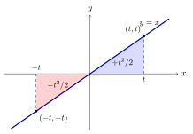
Figure 4. \(y=x\) with \(t=3\). The signed area from \(0\) to \(t\) is \(+\frac{t^2}2=\frac92\) (blue), from \(-t\) to \(0\) it is \(-\frac92\) (red), and the two cancel in \(\int_{-t}^t\). But each piece grows without bound as \(t\to\infty\), so neither \(\int_0^\infty x\,dx\) nor \(\int_{-\infty}^0x\,dx\) converges, and “cancelling infinities” is not a value.
(b) The substitution \(u=1+x^2\), \(du=2x\,dx\) is perfectly valid on every closed interval \([a,b]\) (it needs a continuous derivative, nothing more), and gives
The student’s mistake is the next step: both \(x\to-\infty\) and \(x\to\infty\) send \(u\) to \(\infty\), and “\(\int_\infty^\infty\)” silently assumes that the two limits of integration are equal, that is, that \(1+a^2=1+b^2\), which is the choice \(a=-b\) (the symmetric limit). The definition lets \(a\to-\infty\) and \(b\to\infty\) independently, and then \(\frac12\ln\frac{1+b^2}{1+a^2}\) has no limit: with \(a=-b\) it is \(0\), with \(a=-\frac b2\) it tends to \(\frac12\ln4=\ln2\). Equivalently, on one half alone, \(\int_0^b\frac{x\,dx}{1+x^2}=\frac12\ln(1+b^2)\to\infty\), so \(\int_0^\infty\frac x{1+x^2}\,dx\) diverges, and so does \(\int_{-\infty}^\infty\frac x{1+x^2}\,dx\) (the integrand is odd, Theorem 8.9.12(2)).
Pause and think 8.9.2: Odd means zero?
A classmate says: “\(x^3\) is an odd function, so the positive and negative areas cancel and \(\int_{-\infty}^\infty x^3\,dx=0\).” Is that right? Does the same argument work for \(\int_{-\infty}^\infty xe^{-x^2}\,dx\)? What must you check before you may say “odd, so zero”?
Answer and discussion
The classmate is wrong. For \(\int_{-\infty}^\infty x^3\,dx\), the piece \(\int_0^b x^3\,dx=\frac{b^4}4\to\infty\) diverges, so the integral diverges, and the symmetric limit \(0\) is not the value. For \(xe^{-x^2}\) the argument is correct, but only because we can check that \(\int_0^\infty xe^{-x^2}\,dx=\frac12\) converges (and so does the piece on \((-\infty,0]\)); then the two pieces cancel and the value is \(0\). Before saying “odd, so zero” check that the integral converges.
Comparison: deciding convergence without an antiderivative¶
Sections 8.6 and 8.7 showed that many integrands, for example \(e^{-x^2}\), have no elementary antiderivative, so the method of the previous pages (integrate, then take the limit) is closed. But often the question is only whether an integral converges, or how big it is, and for that a comparison with a simpler integral is enough. The comparison tests are the improper-integral version of “a number smaller than a finite number is finite”. They need three ingredients: a way to organize the many kinds of improper integral into one, the algebra of limits of integrals, and the key fact that for a non-negative integrand the integral up to \(x\) can only grow.
One trouble spot at a time. A piece is an integral \(\int_a^\omega f(x)\,dx\) with \(a<\omega\le\infty\) and \(f\) continuous on \([a,\omega)\), defined as \(\lim_{x\to\omega^-}\int_a^xf\). Here \(\omega\) is either \(\infty\) or a finite number where \(f\) is undefined or unbounded. By Definitions 8.9.1 and 8.9.2, every improper integral is a finite sum of pieces and mirror images of pieces (trouble at the left end), and it converges exactly when every piece does. The mirror principle says that a mirror image is a piece after a change of variable.
Theorem 8.9.14: The mirror principle
Let \(a<b\). (1) If \(f\) is continuous on \((a,b]\) and \(g(u)=f(a+b-u)\) for \(a\le u<b\), then \(\int_a^bf\) converges if and only if the piece \(\int_a^bg\) converges, and the values are equal. (2) If \(f\) is continuous on \((-\infty,b]\) and \(g(u)=f(-u)\) for \(u\ge-b\), then \(\int_{-\infty}^bf\) converges if and only if the piece \(\int_{-b}^\infty g\) converges, with equal values.
Proof. (1) For \(a<c<b\) the substitution \(x=a+b-u\), \(dx=-du\) turns \(\int_c^bf(x)\,dx\) into \(\int_a^{a+b-c}g(u)\,du\) (the limits \(x=c,b\) correspond to \(u=a+b-c,a\), and the minus sign from \(dx=-du\) reverses them). The map \(c\mapsto a+b-c\) is a bijection of \((a,b)\) onto itself that exchanges “\(c\to a^+\)” and “\(a+b-c\to b^-\)”, so the two limits exist together and are equal. (2) In the same way \(\int_t^bf(x)\,dx=\int_{-b}^{-t}g(u)\,du\) by \(x=-u\), and \(t\to-\infty\) corresponds to \(-t\to\infty\). \(\blacksquare\) ◻ ∎
In particular a statement about the sign of the integrand, or about a limit \(\lim_{x\to a^+}\frac{f(x)}{h(x)}\), becomes the same statement for \(g\) at \(b^-\). So every theorem below is stated and proved for pieces \(\int_a^\omega\), and it holds, with the obvious change of one-sided limit, at a left-hand trouble spot and at \(-\infty\).
Theorem 8.9.15: Arithmetic of improper integrals
Let \(f\) and \(g\) be continuous on \([a,\omega)\).
(1) (Additivity) For \(a\le c<\omega\): \(\int_a^\omega f\) converges if and only if \(\int_c^\omega f\) converges, and then \(\int_a^\omega f=\int_a^cf+\int_c^\omega f\).
(2) (Linearity) If \(\int_a^\omega f\) and \(\int_a^\omega g\) converge, then \(\int_a^\omega(\alpha f+\beta g)\) converges and equals \(\alpha\int_a^\omega f+\beta\int_a^\omega g\). If \(\alpha\ne0\), then \(\int_a^\omega\alpha f\) converges if and only if \(\int_a^\omega f\) does.
(3) (Order) If \(\int_a^\omega f\) and \(\int_a^\omega g\) converge and \(f\le g\) on \([a,\omega)\), then \(\int_a^\omega f\le\int_a^\omega g\).
Proof. For \(x\in[c,\omega)\), \(\int_a^xf=\int_a^cf+\int_c^xf\), and \(\int_a^cf\) is a constant; limits as \(x\to\omega^-\) of the two sides exist together, which is (1). For (2), \(\int_a^x(\alpha f+\beta g)=\alpha\int_a^xf+\beta\int_a^xg\) and the limit laws apply; and if \(\alpha\ne0\), \(\int_a^xf=\frac1\alpha\int_a^x\alpha f\). For (3), \(\int_a^xf\le\int_a^xg\) for every \(x\), and limits preserve non-strict inequalities (Calculus I). \(\blacksquare\) ◻ ∎
Now the key fact. If \(f\ge0\), then \(F(x)=\int_a^xf\) increases with \(x\), and an increasing function either levels off at a finite value or goes to \(\infty\). There is no third possibility, no oscillation. This is what makes the comparison tests work.
Theorem 8.9.16: Non-negative integrands: the bounded-above criterion
Let \(f\) be continuous on \([a,\omega)\) with \(f\ge0\), and let \(F(x)=\int_a^xf\). Then \(F\) is nondecreasing, and
(1) if \(F\) is bounded above, then \(\int_a^\omega f\) converges, and \(F(x)\le\int_a^\omega f\) for every \(x\);
(2) if \(F\) is not bounded above, then \(F(x)\to\infty\) as \(x\to\omega^-\): the integral diverges to \(\infty\).
In words: an integral of a non-negative function converges if and only if the integrals up to \(x\) stay bounded.
Proof. If \(a\le x<y<\omega\) then \(F(y)-F(x)=\int_x^yf\ge0\), so \(F\) is nondecreasing. A nondecreasing function on \([a,\omega)\) that is bounded above has a limit at \(\omega^-\) equal to its supremum, and one that is not bounded above tends to \(\infty\). For \(\omega=\infty\) this is Theorem C.4 (which rests on Theorem C.3); for finite \(\omega\) it is Theorem N.2. Both come from the completeness of the real numbers (Appendix A), and the proofs are in the appendix. The inequality \(F(x)\le\int_a^\omega f\) holds because the limit of a nondecreasing function is its supremum. \(\blacksquare\) ◻ ∎
Theorem 8.9.17: The Comparison Test
Let \(f\) and \(g\) be continuous on \([a,\omega)\) with \(0\le g(x)\le f(x)\).
(1) If \(\int_a^\omega f\) converges, then \(\int_a^\omega g\) converges, and \(\int_a^\omega g\le\int_a^\omega f\).
(2) If \(\int_a^\omega g\) diverges, then \(\int_a^\omega f\) diverges (to \(\infty\)).
The inequality \(0\le g\le f\) need only hold on some interval \([c,\omega)\) with \(c<\omega\): the verdict on convergence is unaffected (Theorem 8.9.15(1)).
Proof. Let \(F(x)=\int_a^xf\) and \(G(x)=\int_a^xg\). Since \(0\le g\le f\), \(0\le G(x)\le F(x)\) for every \(x\). (1) If \(\int_a^\omega f\) converges, then by Theorem 8.9.16(1), \(F(x)\le\int_a^\omega f\), so \(G(x)\le\int_a^\omega f\) for every \(x\): \(G\) is bounded above, so \(\int_a^\omega g\) converges by Theorem 8.9.16(1), and \(\int_a^\omega g\le\int_a^\omega f\) by Theorem 8.9.15(3). (2) is the contrapositive of (1), and Theorem 8.9.16(2) says what the divergence looks like: \(G\to\infty\), so \(F\ge G\to\infty\). For the last sentence, apply the theorem on \([c,\omega)\) and use additivity: \(\int_a^\omega\) converges if and only if \(\int_c^\omega\) does. \(\blacksquare\) ◻ ∎
Theorem 8.9.18: The Limit Comparison Test
Let \(f\) and \(g\) be continuous and positive on \([a,\omega)\), and suppose \(L=\displaystyle\lim_{x\to\omega^-}\frac{f(x)}{g(x)}\) exists (\(L\) a number or \(\infty\)).
(1) If \(0<L<\infty\), then \(\int_a^\omega f\) and \(\int_a^\omega g\) either both converge or both diverge.
(2) If \(L=0\) and \(\int_a^\omega g\) converges, then \(\int_a^\omega f\) converges.
(3) If \(L=\infty\) and \(\int_a^\omega g\) diverges, then \(\int_a^\omega f\) diverges.
Proof. (1) Take \(\varepsilon=\frac L2\): there is \(c<\omega\) such that \(\frac L2<\frac fg<\frac{3L}2\) on \([c,\omega)\), that is, \(\frac L2\,g<f<\frac{3L}2\,g\). If \(\int g\) converges, so does \(\int\frac{3L}2g\) (Theorem 8.9.15(2)), and \(f<\frac{3L}2g\) gives that \(\int f\) converges by the Comparison Test. If \(\int g\) diverges, so does \(\int\frac L2g\), and \(f>\frac L2g\) gives that \(\int f\) diverges. (2) With \(\varepsilon=1\) there is \(c\) with \(\frac fg<1\), that is \(f<g\), on \([c,\omega)\); if \(\int g\) converges, so does \(\int f\). (3) If \(L=\infty\) there is \(c\) with \(\frac fg>1\), that is \(f>g\), on \([c,\omega)\); if \(\int g\) diverges, so does \(\int f\). In each case the Comparison Test is applied on \([c,\omega)\), which is allowed by its last sentence. \(\blacksquare\) ◻ ∎
How to use them. Guess the behavior from the part of \(f\) that dominates near the trouble spot, choose a comparison function \(g\) whose integral you know (usually \(x^{-p}\) or \(e^{-kx}\), Theorem 8.9.5), and then decide which test is easier: the Comparison Test needs an inequality for all large \(x\) (or all \(x\) near the singularity), the Limit Comparison Test needs a limit.
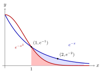
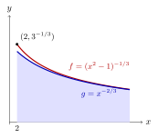
Figure 5. Left: for \(x\ge1\) the red curve \(e^{-x^2}\) lies below the blue curve \(e^{-x}\), so the red region (area \(\le e^{-1}\)) is inside the blue one, which has finite area \(e^{-1}\): the Comparison Test gives convergence of \(\int_1^\infty e^{-x^2}dx\). (The curves cross at \(x=0\) and \(x=1\); for \(0<x<1\), \(e^{-x^2}>e^{-x}\).) Right: \(f(x)=(x^2-1)^{-1/3}\) lies above \(g(x)=x^{-2/3}\) for \(x\ge2\), and the shaded region under \(g\) already has infinite area, so the region under \(f\) does too: \(\int_2^\infty f\) diverges (Example 8.9.19(b)).
Example 8.9.19: The Comparison Test
Decide whether the integrals converge: (a) \(\displaystyle\int_1^\infty e^{-x^2}\,dx\); (b) \(\displaystyle\int_2^\infty\frac{dx}{\sqrt[3]{x^2-1}}\).
Solution. (a) The integrand has no elementary antiderivative (Theorem 8.6.18), so we compare. Predict first: \(e^{-x^2}\) decays faster than \(e^{-x}\), whose integral over \([1,\infty)\) converges, so we expect convergence and use part (1). For \(x\ge1\) we have \(x^2\ge x\), hence \(-x^2\le-x\), and since \(e^u\) is increasing, \(0<e^{-x^2}\le e^{-x}\). The comparison integral is \(\int_1^\infty e^{-x}\,dx=\lim_{b\to\infty}\left(e^{-1}-e^{-b}\right)=e^{-1}\). By the Comparison Test, \(\int_1^\infty e^{-x^2}\,dx\) converges, and its value is at most \(e^{-1}\approx0.3679\). Adding the ordinary integral \(\int_0^1e^{-x^2}\,dx\) (Theorem 8.9.15(1)) shows that \(\int_0^\infty e^{-x^2}\,dx\) converges too. A better comparison function gives a better bound. For \(x\ge1\) also \(e^{-x^2}\le xe^{-x^2}\), and \(\int_1^\infty xe^{-x^2}\,dx=\lim_{b\to\infty}\left[-\frac{e^{-x^2}}2\right]_1^b=\frac1{2e}\approx0.1839\), so \(\int_1^\infty e^{-x^2}\,dx\le0.1839\). (The true value is about \(0.1394\); the bound is safe, not sharp.)
(b) For large \(x\), \(\sqrt[3]{x^2-1}\approx x^{2/3}\), and \(\int_2^\infty x^{-2/3}\,dx\) diverges (\(p=\frac23\le1\), Theorem 8.9.5), so we expect divergence and use part (2) with \(g(x)=x^{-2/3}\) the smaller function. For \(x\ge2\), \(0<x^2-1<x^2\), so \((x^2-1)^{1/3}<x^{2/3}\) and, taking reciprocals,
Since \(\int_2^\infty x^{-2/3}\,dx\) diverges, \(\int_2^\infty\frac{dx}{\sqrt[3]{x^2-1}}\) diverges (to \(\infty\)).
The inequality must point the right way
Both \(\frac1{x^2+1}\le\frac1x\) and \(\frac1{x^2+1}\le\frac1{x^2}\) hold on \([1,\infty)\). The second comparison proves that \(\int_1^\infty\frac{dx}{x^2+1}\) converges, because \(\int_1^\infty\frac{dx}{x^2}\) converges. The first proves nothing: \(\int_1^\infty\frac{dx}x\) diverges, and a smaller function can still have a finite integral under a larger one that has an infinite integral. To prove convergence, bound the integrand above by a convergent integrand; to prove divergence, bound it below by a divergent one. Also check the sign: the tests need \(g\ge0\) (an inequality such as \(-\frac1x\le\frac1{x^2}\) is true and useless).
Knowledge Check 8.9.3: Which way does it go?
Let \(f\) and \(g\) be continuous on \([1,\infty)\) with \(0\le g(x)\le f(x)\). What, if anything, can you conclude about the other integral in each case? (a) \(\int_1^\infty f\) converges. (b) \(\int_1^\infty f\) diverges. (c) \(\int_1^\infty g\) converges. (d) \(\int_1^\infty g\) diverges.
Example 8.9.20: The Limit Comparison Test
Decide whether the integrals converge: (a) \(\displaystyle\int_1^\infty\frac{x+2}{x^3+4}\,dx\); (b) \(\displaystyle\int_2^\infty\frac{x\,dx}{\sqrt{x^3-1}}\); (c) \(\displaystyle\int_0^1\frac{dx}{\sqrt x+x^3}\); (d) \(\displaystyle\int_1^\infty\frac{\ln x}{x^2}\,dx\); (e) \(\displaystyle\int_2^\infty\frac{\ln x}x\,dx\).
Solution. In each case the integrand is positive and continuous on the interval.
(a) For large \(x\) the numerator behaves like \(x\) and the denominator like \(x^3\), so compare with \(g(x)=\frac1{x^2}\): \(\dfrac{f(x)}{g(x)}=\dfrac{x^2(x+2)}{x^3+4}=\dfrac{1+2/x}{1+4/x^3}\to1\) as \(x\to\infty\). Since \(0<1<\infty\) and \(\int_1^\infty x^{-2}\,dx\) converges, \(\int_1^\infty\frac{x+2}{x^3+4}\,dx\) converges.
(b) \(\sqrt{x^3-1}\approx x^{3/2}\), so \(f\approx x^{-1/2}\); take \(g(x)=x^{-1/2}\). Then \(\dfrac fg=\dfrac{x\cdot x^{1/2}}{\sqrt{x^3-1}}=\dfrac1{\sqrt{1-x^{-3}}}\to1\). As \(\int_2^\infty x^{-1/2}\,dx\) diverges (\(p=\frac12\)), \(\int_2^\infty\frac{x\,dx}{\sqrt{x^3-1}}\) diverges.
(c) The trouble spot is \(x=0\), where \(f\to\infty\). Near \(0\), \(x^3\ll\sqrt x\), so take \(g(x)=x^{-1/2}\) and let \(x\to0^+\): \(\dfrac fg=\dfrac{\sqrt x}{\sqrt x+x^3}=\dfrac1{1+x^{5/2}}\to1\). Since \(\int_0^1x^{-1/2}\,dx=2\) converges (Theorem 8.9.5(2)), \(\int_0^1\frac{dx}{\sqrt x+x^3}\) converges.
(d) Here \(\ln x\) grows more slowly than any power, so compare with a power slightly smaller than \(x^{-2}\), say \(g(x)=x^{-3/2}\): \(\dfrac fg=\dfrac{\ln x}{x^{1/2}}\to0\) (L’Hôpital: \(\frac{1/x}{\frac12x^{-1/2}}=\frac2{\sqrt x}\to0\)). With \(L=0\) and \(\int_1^\infty x^{-3/2}\,dx\) convergent, \(\int_1^\infty\frac{\ln x}{x^2}\,dx\) converges (its value is \(1\), by parts).
(e) Compare with \(g(x)=\frac1x\): \(\dfrac fg=\ln x\to\infty\), and \(\int_2^\infty\frac{dx}x\) diverges, so by case (3) \(\int_2^\infty\frac{\ln x}x\,dx\) diverges. (Directly: \(\int_2^b\frac{\ln x}x\,dx=\frac{(\ln b)^2-(\ln2)^2}2\to\infty\).) In (d) the limit is \(0\), so the test only works because \(g\) converges; in (e) the limit is \(\infty\), so it only works because \(g\) diverges. With the wrong \(g\) (\(g=\frac1{x^2}\) in (d)): \(\frac fg=\ln x\to\infty\) and \(\int g\) converges: no conclusion.
Absolute convergence¶
The comparison tests need \(f\ge0\). For an integrand that changes sign (an oscillating one such as \(\frac{\sin x}{x^2}\)) we compare \(\lvert f\rvert\) instead, and the next theorem says that this is enough.
Definition 8.9.21: Absolute and conditional convergence
A piece \(\int_a^\omega f\) converges absolutely if \(\int_a^\omega\lvert f\rvert\) converges. It converges conditionally if \(\int_a^\omega f\) converges but \(\int_a^\omega\lvert f\rvert\) diverges.
Theorem 8.9.22: Absolute convergence implies convergence
Let \(f\) be continuous on \([a,\omega)\). If \(\int_a^\omega\lvert f\rvert\) converges, then \(\int_a^\omega f\) converges, and \(\left\lvert\int_a^\omega f\right\rvert\le\int_a^\omega\lvert f\rvert\).
Proof. Since \(-\lvert f\rvert\le f\le\lvert f\rvert\), we have \(0\le f+\lvert f\rvert\le2\lvert f\rvert\). The integral \(\int_a^\omega2\lvert f\rvert\) converges (Theorem 8.9.15(2)), so by the Comparison Test \(\int_a^\omega(f+\lvert f\rvert)\) converges. Now \(f=(f+\lvert f\rvert)-\lvert f\rvert\) is a difference of two functions with convergent integrals, so \(\int_a^\omega f\) converges by linearity (Theorem 8.9.15(2)). Finally \(-\lvert f\rvert\le f\le\lvert f\rvert\) gives, by the order property (Theorem 8.9.15(3)), \(-\int_a^\omega\lvert f\rvert\le\int_a^\omega f\le\int_a^\omega\lvert f\rvert\). \(\blacksquare\) ◻ ∎
The converse is false: an integral can converge conditionally (Pause and think 8.9.3, and Example 8.9.41). The theorem also applies at a left-hand trouble spot and at \(-\infty\) by the mirror principle.
Example 8.9.23: Oscillating integrands, and an integral that converges although the integrand does not tend to \(0\)
(a) Show that \(\displaystyle\int_1^\infty\frac{\sin x}{x^2}\,dx\) converges. (b) Show that \(\displaystyle\int_0^\infty\sin\left(x^2\right)dx\) converges, although \(\sin\left(x^2\right)\) does not tend to \(0\) as \(x\to\infty\). (c) Show that a continuous \(f\ge0\) with \(f(n)=1\) for every integer \(n\ge2\) can have a convergent integral.
Solution. (a) For \(x\ge1\), \(\left\lvert\frac{\sin x}{x^2}\right\rvert\le\frac1{x^2}\), and \(\int_1^\infty\frac{dx}{x^2}\) converges. By the Comparison Test \(\int_1^\infty\left\lvert\frac{\sin x}{x^2}\right\rvert dx\) converges, so by Theorem 8.9.22 \(\int_1^\infty\frac{\sin x}{x^2}\,dx\) converges. (It converges absolutely. The value is not needed, and we do not claim a closed form.)
(b) The integrand does not tend to \(0\): at \(x_k=\sqrt{\frac\pi2+2k\pi}\) (\(k=0,1,2,\dots\), a sequence tending to \(\infty\)) we have \(\sin\left(x_k^2\right)=\sin\left(\frac\pi2+2k\pi\right)=1\) (Figure 6). The integral over \([0,1]\) is an ordinary one, so by additivity only \(\int_1^\infty\) matters. For \(b>1\) substitute \(u=x^2\), \(x=\sqrt u\), \(dx=\frac{du}{2\sqrt u}\) (Section 8.1):
Integrate by parts (Theorem 8.2.1) with \(dv=\sin u\,du\), \(v=-\cos u\) and \(w=\frac1{2\sqrt u}\), \(dw=-\frac1{4u^{3/2}}\,du\):
Let \(b\to\infty\). The middle term satisfies \(\left\lvert\frac{\cos(b^2)}{2b}\right\rvert\le\frac1{2b}\to0\). The last integral converges: \(\left\lvert\frac{\cos u}{4u^{3/2}}\right\rvert\le\frac14u^{-3/2}\) and \(\int_1^\infty u^{-3/2}\,du\) converges (\(p=\frac32>1\)), so \(\int_1^\infty\frac{\cos u}{4u^{3/2}}\,du\) converges absolutely, hence converges (Theorem 8.9.22). Therefore \(\lim_{b\to\infty}\int_1^b\sin\left(x^2\right)dx\) exists, and \(\int_0^\infty\sin\left(x^2\right)dx\) converges. (Its value is \(\frac12\sqrt{\frac\pi2}\approx0.6267\); this follows from the Fresnel integrals and is stated here without proof.) The area oscillates and the positive and negative humps shrink in width fast enough that they add up to a limit, but not because \(f\to0\): the heights stay \(1\).
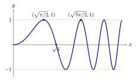
Figure 6. \(y=\sin\left(x^2\right)\). The humps get narrower as \(x\) grows (the first zero after \(0\) is at \(\sqrt\pi\approx1.77\), and the humps then crowd together), but their height stays \(1\), so \(y\not\to0\). The signed areas of consecutive humps alternate and decrease in size, and \(\int_0^\infty\sin(x^2)\,dx\) converges.
(c) Let \(f\) be zero except on the intervals \(\left[n-\frac1{n^2},\,n+\frac1{n^2}\right]\) for \(n=2,3,4,\dots\) (these do not overlap), where its graph is a triangle with peak \(f(n)=1\) and base of length \(\frac2{n^2}\). The triangle has area \(\frac12\cdot\frac2{n^2}\cdot1=\frac1{n^2}\). For an integer \(N\ge2\) and \(x\le N\), the integral \(F(x)=\int_0^xf\) is at most the sum of the areas of the triangles \(n=2,\dots,N\) (the triangle with \(n=N+1\) starts at \(N+1-\frac1{(N+1)^2}>N\)), and
So \(F\) is bounded above by \(1\), and by Theorem 8.9.16(1) the integral \(\int_0^\infty f\) converges, although \(f(n)=1\) for every \(n\ge2\) and so \(f\) has no limit \(0\).
Pause and think 8.9.3: Must the integrand tend to zero?
Part (b) and part (c) of the last example give convergent integrals whose integrands do not tend to \(0\). (1) What does that say about the statement “if \(\int_a^\infty f\) converges then \(f(x)\to0\)”? (2) What additional hypothesis on \(f\) would rescue it? (Example 8.9.42 proves one.) (3) Does \(\int_0^\infty\sin x\,dx\) converge? Why does the “humps cancel” picture not decide it?
Answer and discussion
(1) It is false. Convergence of the integral does not force the integrand to tend to \(0\). (2) That \(f\) is decreasing, or more generally monotone for large \(x\) (and non-negative): then \(f(x)\to0\), and even \(xf(x)\to0\) (Example 8.9.42). (3) No: \(\int_0^b\sin x\,dx=1-\cos b\) has no limit as \(b\to\infty\). Cancellation of humps would need the humps to shrink; here every hump has the same area \(2\) and they alternate in sign, so the partial integrals oscillate between \(0\) and \(2\) forever. For \(\frac{\sin x}x\) or \(\sin\left(x^2\right)\) the humps shrink, and the partial integrals settle.
No elementary antiderivative: bracket the integral and compute the rest¶
Section 8.6 proved that \(\int e^{-x^2}\,dx\) is not elementary, and Section 8.8 approximated integrals like \(\int_0^1e^{-x^2}\,dx\) with a guaranteed error. For \(\int_0^\infty e^{-x^2}\,dx\) the interval is infinite, and a rule with \(n\) panels needs a finite interval. The method is the one the Comparison Test suggests: cut the integral at a point, bound the tail by comparison, and compute the finite piece with a rule and its error bound. The result is a bracket, a pair of numbers between which the integral is guaranteed to lie.
Example 8.9.24: \(\displaystyle\int_0^\infty e^{-x^2}\,dx\) and \(\displaystyle\int_0^1\frac{\cos x}{\sqrt x}\,dx\) with guaranteed errors
(a) Bracket \(I=\int_0^\infty e^{-x^2}\,dx\) within \(10^{-4}\). (b) Approximate \(J=\int_0^1\frac{\cos x}{\sqrt x}\,dx\) and explain why the rules of Section 8.8 cannot be applied to it directly.
Solution. (a) The integral exists. By Example 8.9.19(a) and additivity, \(I\) converges. It has no elementary antiderivative (Theorem 8.6.18), so the Fundamental Theorem cannot be used. (A later course, with a double integral and polar coordinates, shows \(I=\frac{\sqrt\pi}2\approx0.886227\); we use that value only to check our answer at the end, and we do not use it in the argument.) Cut at \(3\): \(I=\int_0^3e^{-x^2}\,dx+\int_3^\infty e^{-x^2}\,dx\).
The tail. For \(x\ge3\) we have \(1\le\frac x3\), so \(0<e^{-x^2}\le\frac x3e^{-x^2}\), and
By the Comparison Test, \(0<\int_3^\infty e^{-x^2}\,dx\le\frac{e^{-9}}6\approx0.0000206\).
The finite piece. Use Simpson’s Rule on \([0,3]\). With \(f(x)=e^{-x^2}\), \(f^{(4)}(x)=\left(16x^4-48x^2+12\right)e^{-x^2}\) and \(f^{(5)}(x)=-8x\left(4x^4-20x^2+15\right)e^{-x^2}\). On \([0,3]\) the derivative \(f^{(5)}\) vanishes at \(x=0\) and at the roots of \(4u^2-20u+15=0\), \(u=x^2=\frac{5\pm\sqrt{10}}2\), that is at \(x\approx0.959\) and \(x\approx2.020\). The values of \(f^{(4)}\) at \(0\), \(0.959\), \(2.020\) and the endpoint \(3\) are \(12\), \(-7.42\), \(1.39\) and \(0.11\), so \(\lvert f^{(4)}\rvert\le M_4=12\) on \([0,3]\). With \(n=24\) (so \(\Delta x=\frac18\)) Theorem 8.8.11 gives the error bound
and the rule itself gives \(S(24)\approx0.886207\). So \(0.886158\le\int_0^3e^{-x^2}\,dx\le0.886256\).
The bracket. Adding the tail, which lies between \(0\) and \(0.0000206\),
The quoted value \(0.886227\) lies inside the bracket, as it must. The number \(0.8862\) is an approximation and \(I\) is not equal to it; what is guaranteed is the bracket. Why not the monotone bracket of Theorem 8.8.20? The integrand is decreasing, so \(R(24)\le\int_0^3e^{-x^2}\,dx\le L(24)\) with no derivative needed, but the gap is \(\big(f(0)-f(3)\big)\Delta x=\frac{1-e^{-9}}8\approx0.125\), a thousand times wider than the bracket above.
(b) \(J=\int_0^1\frac{\cos x}{\sqrt x}\,dx\) is improper at \(x=0\) (the integrand tends to \(\infty\)). It converges: on \((0,1]\), \(0<\cos x\le1\) (since \(1<\frac\pi2\)), so \(0<\frac{\cos x}{\sqrt x}\le\frac1{\sqrt x}\), and \(\int_0^1x^{-1/2}\,dx=2\); hence \(J\le2\). The rules of Section 8.8 do not apply: \(f(0)\) is undefined, so \(L(n)\), \(T(n)\) and \(S(n)\) cannot even be written down, and \(f''\) and \(f^{(4)}\) are unbounded near \(0\), so the error bounds have no \(M_2\) or \(M_4\). Cutting off \([0,\delta]\) and dropping it is no cure either: \(\int_0^\delta\frac{\cos x}{\sqrt x}\,dx\) is about \(2\sqrt\delta\), which is \(0.02\) for \(\delta=10^{-4}\), a \(1\%\) error that shrinks only like \(\sqrt\delta\). The remedy is the one of Example 8.8.24: change the variable so that the bad point disappears. Put \(x=u^2\), \(dx=2u\,du\) (one-to-one on \([c,1]\) for \(c>0\), then \(c\to0^+\)):
The new integrand \(g(u)=2\cos\left(u^2\right)\) is smooth on \([0,1]\), with \(g^{(4)}(u)=8\left(4u^4\cos u^2+12u^2\sin u^2-3\cos u^2\right)\), so \(\lvert g^{(4)}\rvert\le8(4+12+3)=152=M_4\). Simpson’s Rule with \(n=10\) gives \(S(10)\approx1.809049\), with error bound \(\frac{152}{180\cdot10^4}\approx8.4\times10^{-5}\). Therefore
(The smaller error of the actual computation, about \(6\times10^{-8}\), is another example of a bound that is safe and not sharp.) Note what the substitution did: the integrand of \(J\) blows up at \(0\) and the integrand of \(2\int_0^1\cos(u^2)\,du\) does not, yet the two areas are equal (Figure 7).
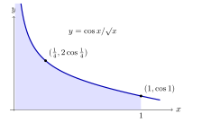
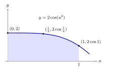
Figure 7. The two sides of \(x=u^2\). Left: \(y=\frac{\cos x}{\sqrt x}\) on \((0,1]\) rises without bound at the vertical asymptote \(x=0\). Right: \(y=2\cos\left(u^2\right)\) on \([0,1]\) is smooth. The point \(x=\frac14\) corresponds to \(u=\frac12\), with the same height \(2\cos\frac14\), and the two regions have the same area \(J\approx1.8090\).
A last remark on the improper rectangle sums. If \(f\) is decreasing on \((0,1]\), the right-endpoint sum \(R(n)\) is still a lower bound for \(\int_0^1f\), even when \(f\) is unbounded at \(0\), because on each panel \(f(x)\ge f(x_k)\) (this is the easy half of Theorem 8.8.20). For \(\int_0^1x^{-1/2}\,dx=2\) it gives \(R(100)\approx1.859\), an error of \(0.14\) with a hundred rectangles: the rectangle rules converge very slowly toward an integrable singularity, which is why the substitution is worth the effort.
Gamma-type integrals and the reduction formula¶
Integrals of the form \(\int_0^\infty x^ne^{-ax}\,dx\) occur everywhere (decay times, waiting times, moments of a distribution). They are all improper twice if the power is not an integer, and they all reduce, by parts, to one number.
Theorem 8.9.25: The Gamma function and the reduction formula
For every real number \(s>0\) the integral \(\Gamma(s)=\displaystyle\int_0^\infty t^{s-1}e^{-t}\,dt\) converges. Moreover:
(1) \(\Gamma(s+1)=s\,\Gamma(s)\) for every \(s>0\), and \(\Gamma(1)=1\); hence \(\Gamma(n+1)=n!\) for \(n=0,1,2,\dots\);
(2) for \(a>0\) and \(s>0\): \(\displaystyle\int_0^\infty x^{s-1}e^{-ax}\,dx=\frac{\Gamma(s)}{a^s}\); in particular \(\displaystyle\int_0^\infty x^ne^{-ax}\,dx=\frac{n!}{a^{n+1}}\) and \(J_n=\frac naJ_{n-1}\) for \(J_n=\int_0^\infty x^ne^{-ax}\,dx\), \(n\ge1\).
Proof. Convergence. Cut at \(t=1\). On \((0,1]\), \(0<t^{s-1}e^{-t}\le t^{s-1}=t^{-(1-s)}\) and \(1-s<1\), so \(\int_0^1t^{-(1-s)}\,dt\) converges (Theorem 8.9.5(2)); by the Comparison Test \(\int_0^1t^{s-1}e^{-t}\,dt\) converges. On \([1,\infty)\) compare with \(g(t)=t^{-2}\): \(\frac{t^{s-1}e^{-t}}{t^{-2}}=t^{s+1}e^{-t}\to0\) as \(t\to\infty\) (Calculus I: an exponential beats every power; apply L’Hôpital’s Rule repeatedly). Since \(\int_1^\infty t^{-2}\,dt\) converges, the Limit Comparison Test (case \(L=0\)) shows that \(\int_1^\infty t^{s-1}e^{-t}\,dt\) converges. Both pieces converge, so \(\Gamma(s)\) does.
(1) For \(0<\varepsilon<b\), integrate by parts with \(u=t^s\), \(dv=e^{-t}\,dt\) (Theorem 8.2.1):
As \(b\to\infty\), \(b^se^{-b}\to0\) (an exponential beats a power), and as \(\varepsilon\to0^+\), \(\varepsilon^se^{-\varepsilon}\to0\) because \(s>0\). The integral on the right tends to \(s\,\Gamma(s)\) and the left side to \(\Gamma(s+1)\). Also \(\Gamma(1)=\int_0^\infty e^{-t}\,dt=\lim_{b\to\infty}(1-e^{-b})=1\). By induction, \(\Gamma(n+1)=n\,\Gamma(n)=n(n-1)\Gamma(n-1)=\dots=n!\,\Gamma(1)=n!\).
(2) On \([\varepsilon,b]\) substitute \(t=ax\), \(dt=a\,dx\): \(\int_\varepsilon^bt^{s-1}e^{-t}\,dt=\int_{\varepsilon/a}^{b/a}(ax)^{s-1}e^{-ax}a\,dx=a^s\int_{\varepsilon/a}^{b/a}x^{s-1}e^{-ax}\,dx\). Let \(\varepsilon\to0^+\) and \(b\to\infty\); then \(\frac\varepsilon a\to0^+\) and \(\frac ba\to\infty\), giving \(\Gamma(s)=a^s\int_0^\infty x^{s-1}e^{-ax}\,dx\). With \(s=n+1\) this is \(\frac{n!}{a^{n+1}}\), and \(J_n=\frac{n!}{a^{n+1}}=\frac na\cdot\frac{(n-1)!}{a^n}=\frac naJ_{n-1}\). \(\blacksquare\) ◻ ∎
Example 8.9.26: Gamma-type integrals
Evaluate (a) \(\displaystyle\int_0^\infty x^3e^{-2x}\,dx\) by the reduction formula; (b) \(\displaystyle\int_0^\infty x^4e^{-x}\,dx\); (c) \(\Gamma\left(\frac72\right)\).
Solution. (a) With \(a=2\) the reduction formula gives \(J_n=\frac n2J_{n-1}\), starting from \(J_0=\int_0^\infty e^{-2x}\,dx=\frac12\). Then \(J_1=\frac12\cdot\frac12=\frac14\), \(J_2=\frac22\cdot\frac14=\frac14\), \(J_3=\frac32\cdot\frac14=\frac38\). (Directly: \(\frac{3!}{2^4}=\frac6{16}=\frac38\).) Each use of the reduction formula is an integration by parts in which the boundary term \(-x^ne^{-2x}\big/2\) vanishes at both ends.
(b) This is \(\Gamma(5)=4!=24\).
(c) By part (1), \(\Gamma\left(\frac72\right)=\frac52\cdot\frac32\cdot\frac12\,\Gamma\left(\frac12\right)=\frac{15}8\,\Gamma\left(\frac12\right)\). For \(\Gamma\left(\frac12\right)=\int_0^\infty t^{-1/2}e^{-t}\,dt\) substitute \(t=x^2\), \(dt=2x\,dx\): \(\Gamma\left(\frac12\right)=\int_0^\infty\frac{e^{-x^2}}x\,2x\,dx=2\int_0^\infty e^{-x^2}\,dx\). Using the value \(\int_0^\infty e^{-x^2}\,dx=\frac{\sqrt\pi}2\) quoted in Example 8.9.24 (it is not proved in this section), \(\Gamma\left(\frac12\right)=\sqrt\pi\) and
This is how the factorial is extended to non-integers: \(\Gamma(n+1)=n!\) for integers, and \(\Gamma\) is defined for every \(s>0\) (a later course studies it as a function).
Gabriel’s horn: finite volume and infinite surface area¶
Example 8.9.27: The solid obtained by revolving \(y=\frac1x\), \(x\ge1\), about the \(x\)-axis
Find the volume and the surface area of the solid (Gabriel’s horn, also called Torricelli’s trumpet).
Solution. Volume. By the disk method of Calculus I, \(V=\pi\int_1^b\left(\frac1x\right)^2dx\) up to \(x=b\), and for the infinite horn we let \(b\to\infty\):
The volume is finite: \(\pi\) cubic units.
Surface area. The surface-area formula of Calculus I for a curve \(y=f(x)\) revolved about the \(x\)-axis is \(2\pi\int f(x)\sqrt{1+f'(x)^2}\,dx\). Here \(f(x)=\frac1x\) and \(f'(x)=-\frac1{x^2}\), so up to \(x=b\),
We do not need an antiderivative. Since \(\sqrt{1+x^{-4}}\ge1\), the integrand is at least \(\frac1x\), so \(S(b)\ge2\pi\int_1^b\frac{dx}x=2\pi\ln b\to\infty\) as \(b\to\infty\). By the Comparison Test the improper integral \(2\pi\int_1^\infty\frac1x\sqrt{1+\frac1{x^4}}\,dx\) diverges to \(\infty\): the surface area is infinite.
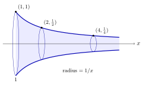
Figure 8. Gabriel’s horn: the region under \(y=\frac1x\) for \(x\ge1\) revolved about the \(x\)-axis (cross-sections at \(x=1,2,4\) are circles of radius \(1,\frac12,\frac14\)). The volume is \(\pi\int_1^\infty x^{-2}dx=\pi\), finite, while the surface area is at least \(2\pi\int_1^\infty\frac{dx}x=\infty\).
What is paradoxical, and what is not. The horn can be filled with \(\pi\) cubic units of paint but its surface “cannot be painted”. There is no contradiction: a volume measures a three-dimensional region, an area a two-dimensional surface, and the two integrals are different integrals (\(\frac1{x^2}\) is integrable at \(\infty\), \(\frac1x\) is not). Painting the inside wall with a layer of fixed thickness \(\varepsilon\) needs volume about \(\varepsilon\cdot S=\infty\); filling the horn uses a layer whose thickness shrinks to \(0\) down the horn. The same comparison shows what happens for the family \(y=x^{-p}\) (Example 8.9.40).
Decay and probability¶
Improper integrals measure the total effect of something that decays but never stops: the total number of decays of a radioactive sample, the total drug exposure, the total probability.
Example 8.9.28: A lifetime with an exponential density
The lifetime \(T\) (in years) of a component has probability density \(f(t)=0.2\,e^{-0.2t}\) for \(t\ge0\) (and \(f(t)=0\) for \(t<0\)). The probability that \(T\) lies in \([a,b]\) is \(\int_a^bf(t)\,dt\). Find (a) the total probability, (b) the probability that the component lasts more than \(10\) years, (c) the mean lifetime \(\int_0^\infty tf(t)\,dt\).
Solution. (a) \(\int_0^\infty0.2e^{-0.2t}\,dt=\lim_{b\to\infty}\left[-e^{-0.2t}\right]_0^b=\lim_{b\to\infty}\left(1-e^{-0.2b}\right)=1\). The total is \(1\), as it must be for a density.
(b) \(P(T>10)=\int_{10}^\infty0.2e^{-0.2t}\,dt=\lim_{b\to\infty}\left(e^{-2}-e^{-0.2b}\right)=e^{-2}\approx0.1353\).
(c) By parts with \(u=t\), \(dv=0.2e^{-0.2t}\,dt\), \(v=-e^{-0.2t}\):
As \(b\to\infty\), \(be^{-0.2b}\to0\) (an exponential beats a power) and \(e^{-0.2b}\to0\), so the mean is \(5\) years, the reciprocal of \(0.2\). (With the notation of Theorem 8.9.25, this is \(0.2\,J_1=0.2\cdot\frac1{0.2^2}=5\).)
An observation. Given that the component has already lasted \(10\) years, the probability that it lasts \(5\) more is \(\frac{P(T>15)}{P(T>10)}=\frac{e^{-3}}{e^{-2}}=e^{-1}=P(T>5)\): the exponential model has no memory. The same integral \(\int_a^\infty\lambda e^{-\lambda t}\,dt=e^{-\lambda a}\) gives the fraction of a radioactive sample still undecayed after time \(a\).
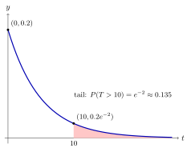
Figure 9. The density \(0.2e^{-0.2t}\). The total area under the curve is \(1\); the shaded tail beyond \(t=10\) has area \(e^{-2}\approx0.1353\) (the horizontal axis is an asymptote, and the tail is still a convergent improper integral).
Looking ahead¶
The ideas of this section return in several later topics, which we name here and do not use. The comparison of an integral with a simpler one, and the fact that for a non-negative integrand the partial integrals can only increase, are exactly the ideas behind the Integral Test and the comparison tests for infinite series, and the dichotomy of the \(p\)-integrals reappears as the dichotomy of the \(p\)-series: the series \(\sum\frac1{n^p}\) converges for exactly the same exponents. Absolute convergence has a twin for series. In probability, a density on an infinite interval is a function with a convergent improper integral equal to \(1\), and means and variances are improper integrals of the Gamma type. The Laplace transform of a function \(f\) is the improper integral \(\int_0^\infty e^{-st}f(t)\,dt\), and the Gamma function studied above is its most famous special value. And the principal value of Example 8.9.13 and Example 8.9.9(b) is the starting point of a useful but different notion in complex analysis and Fourier analysis. Integrals of the Gamma type with a non-integer \(s\), and the integral \(\int_{-\infty}^\infty e^{-x^2}\,dx=\sqrt\pi\) quoted here, are proved in a later course on multiple integrals.
Example bank¶
What’s in this bank. Fourteen further worked examples, grouped by the task and ordered from easiest to hardest within each group.
-
Group 1: infinite intervals (\(\int_2^\infty\frac{dx}{x^2-1}\) by partial fractions, \(\int_0^\infty xe^{-2x}\,dx\) by parts).
-
Group 2: unbounded integrands (\(\int_0^{\pi/2}\frac{\sin x}{\sqrt{\cos x}}\,dx\) and \(\int_0^1\frac{\ln x}{\sqrt x}\,dx\)).
-
Group 3: naive methods that fail (the Interesting-type integrals \(\int_{-\infty}^\infty\frac x{x^2+9}\,dx\) and \(\int_{-\infty}^\infty\sin x\,dx\), and a symmetric integral that does converge).
-
Group 4: comparison (\(\int_1^\infty\frac{dx}{x+e^x}\) converges, \(\int_2^\infty\frac{dx}{\sqrt x\ln x}\) diverges).
-
Group 5: Gamma-type integrals (\(\int_0^\infty x^3e^{-x/2}\,dx\) and \(\int_0^1(\ln x)^3\,dx\)).
-
Group 6: applications (the work to leave the Earth, and a family of horns).
-
Group 7: proofs (conditional convergence of \(\int_1^\infty\frac{\sin x}x\,dx\), and \(xf(x)\to0\) for a decreasing integrable \(f\)).
Group 1: Infinite intervals¶
Example 8.9.29: A rational integrand
Evaluate \(\displaystyle\int_2^\infty\frac{dx}{x^2-1}\).
Solution. Partial fractions (Section 8.5): \(\frac1{x^2-1}=\frac1{(x-1)(x+1)}=\frac A{x-1}+\frac B{x+1}\) gives \(1=A(x+1)+B(x-1)\); \(x=1\) gives \(A=\frac12\) and \(x=-1\) gives \(B=-\frac12\). So for \(b>2\)
As \(b\to\infty\), \(\frac{b-1}{b+1}\to1\) and \(\ln\frac{b-1}{b+1}\to0\), so the limit is \(\frac12\left(0-\ln\frac13\right)=\frac12\ln3\approx0.5493\). Check by comparison: \(\frac1{x^2-1}>\frac1{x^2}\) for \(x>1\) and \(\int_2^\infty\frac{dx}{x^2}=\frac12\), so the value must exceed \(\frac12\); it does.
Example 8.9.30: A product of a power and an exponential
Evaluate \(\displaystyle\int_0^\infty xe^{-2x}\,dx\).
Solution. By parts with \(u=x\), \(dv=e^{-2x}\,dx\), \(v=-\frac12e^{-2x}\) (Theorem 8.2.1):
As \(b\to\infty\), \(be^{-2b}\to0\) (an exponential beats a power) and \(e^{-2b}\to0\), so the value is \(\frac14\). This is \(J_1\) of Theorem 8.9.25(2) with \(a=2\): \(\frac{1!}{2^2}=\frac14\).
Group 2: Unbounded integrands¶
Example 8.9.31: A singularity at the right-hand end
Evaluate \(\displaystyle\int_0^{\pi/2}\frac{\sin x}{\sqrt{\cos x}}\,dx\).
Solution. The integrand tends to \(\infty\) as \(x\to\frac\pi2^-\), so the integral is \(\lim_{c\to\pi/2^-}\int_0^c\). For \(0<c<\frac\pi2\) substitute \(u=\cos x\), \(du=-\sin x\,dx\) (Section 8.1); then \(\int\frac{\sin x}{\sqrt{\cos x}}\,dx=-\int u^{-1/2}\,du=-2\sqrt{\cos x}+C\), and
since \(\cos c\to0^+\). The area is \(2\).
Example 8.9.32: A logarithm at the left-hand end
Evaluate \(\displaystyle\int_0^1\frac{\ln x}{\sqrt x}\,dx\).
Solution. The integrand is not defined at \(0\) and tends to \(-\infty\) there. For \(0<c<1\) integrate by parts with \(u=\ln x\), \(dv=x^{-1/2}\,dx\), \(v=2\sqrt x\):
As \(c\to0^+\), \(\sqrt c\to0\) and \(\sqrt c\ln c\to0\): by L’Hôpital’s Rule, \(\frac{\ln c}{c^{-1/2}}\to\frac{1/c}{-\frac12c^{-3/2}}=-2\sqrt c\to0\). So the value is \(-4\). (The integrand is negative on \((0,1)\), so a negative value is correct.)
Group 3: Methods that fail¶
Example 8.9.33: Two odd integrands, and the symmetric limit
Decide whether (a) \(\displaystyle\int_{-\infty}^\infty\frac x{x^2+9}\,dx\) and (b) \(\displaystyle\int_{-\infty}^\infty\sin x\,dx\) converge. In each case also compute \(\lim_{t\to\infty}\int_{-t}^t\).
Solution. (a) The integrand is odd, so \(\int_{-t}^t\frac x{x^2+9}\,dx=0\) for every \(t\) and the symmetric limit is \(0\). But the symmetric limit is not the definition: we must split (Theorem 8.9.10). An antiderivative is \(F(x)=\frac12\ln\left(x^2+9\right)\), and \(\int_0^b\frac x{x^2+9}\,dx=\frac12\ln\frac{b^2+9}9\to\infty\). Since the piece \(\int_0^\infty\) diverges, \(\int_{-\infty}^\infty\frac x{x^2+9}\,dx\) diverges. (b) \(\int_0^b\sin x\,dx=1-\cos b\), which equals \(0\) at \(b=2k\pi\) and \(2\) at \(b=(2k+1)\pi\) for every positive integer \(k\): it takes both values for arbitrarily large \(b\), so it has no limit. The piece \(\int_0^\infty\sin x\,dx\) diverges, so \(\int_{-\infty}^\infty\sin x\,dx\) diverges. The symmetric integral \(\int_{-t}^t\sin x\,dx=0\) (\(\sin\) is odd), so the symmetric limit exists and equals \(0\) even though the integral does not converge. Here the integrand does not tend to \(0\), and the integral diverges by oscillation rather than by growth.
Example 8.9.34: An even integrand: the whole line from half
Evaluate \(\displaystyle\int_{-\infty}^\infty\frac{dx}{(x^2+1)^2}\).
Solution. By Theorem 8.9.12 the integrand is even, and it is enough to find \(\int_0^\infty\) and double it (once convergence of one piece is shown, the other is the same by symmetry). Substitute \(x=\tan\theta\), \(dx=\sec^2\theta\,d\theta\), \(x^2+1=\sec^2\theta\) (Section 8.4), \(\theta\in\left[0,\frac\pi2\right)\):
using \(\sin2\theta=2\sin\theta\cos\theta=\frac{2x}{x^2+1}\). Then \(\int_0^b\frac{dx}{(x^2+1)^2}=\frac12\left(\arctan b+\frac b{b^2+1}\right)\to\frac12\cdot\frac\pi2=\frac\pi4\), so the whole line gives \(2\cdot\frac\pi4=\frac\pi2\). Check: \(\frac1{(x^2+1)^2}\le\frac1{x^2+1}\) and \(\int_{-\infty}^\infty\frac{dx}{x^2+1}=\pi\), so the value must be less than \(\pi\); it is \(\frac\pi2\).
Group 4: Comparison¶
Example 8.9.35: Convergence by an exponential bound
Show that \(\displaystyle\int_1^\infty\frac{dx}{x+e^x}\) converges and give an upper bound.
Solution. The integrand is continuous and positive on \([1,\infty)\). Since \(x>0\), \(x+e^x>e^x\), so \(0<\frac1{x+e^x}<e^{-x}\). Now \(\int_1^\infty e^{-x}\,dx=\lim_{b\to\infty}\left(e^{-1}-e^{-b}\right)=e^{-1}\). By the Comparison Test the integral converges and its value is less than \(e^{-1}\approx0.368\). (We have not computed the value.)
Example 8.9.36: Divergence by comparison with \(\frac1x\)
Show that \(\displaystyle\int_2^\infty\frac{dx}{\sqrt x\,\ln x}\) diverges.
Solution. We need a lower bound that diverges. Let \(h(x)=\frac{\ln x}{\sqrt x}\). Then \(h'(x)=\frac{2-\ln x}{2x^{3/2}}\), which is positive for \(x<e^2\) and negative for \(x>e^2\), so \(h\) has its maximum at \(x=e^2\), where \(h(e^2)=\frac2e\approx0.74<1\). Hence \(\ln x<\sqrt x\) for all \(x>0\), and for \(x\ge2\)
Since \(\int_2^\infty\frac{dx}x=\lim_{b\to\infty}\left(\ln b-\ln2\right)=\infty\), the integral diverges by the Comparison Test. (The bound \(\ln x<x^{1/2}\) was needed for \(x\ge2\) only, but it holds everywhere.)
Group 5: Gamma-type integrals¶
Example 8.9.37: Reduction by recursion
Evaluate \(\displaystyle\int_0^\infty x^3e^{-x/2}\,dx\).
Solution. Theorem 8.9.25(2) with \(a=\frac12\): \(J_n=\frac naJ_{n-1}=2nJ_{n-1}\), with \(J_0=\int_0^\infty e^{-x/2}\,dx=2\). Then \(J_1=2\cdot1\cdot2=4\), \(J_2=2\cdot2\cdot4=16\), \(J_3=2\cdot3\cdot16=96\). Directly, \(\frac{3!}{(1/2)^4}=6\cdot16=96\).
Example 8.9.38: A logarithm raised to a power
Evaluate \(\displaystyle\int_0^1(\ln x)^3\,dx\).
Solution. The integrand tends to \(-\infty\) at \(0\). Substitute \(x=e^{-t}\), \(dx=-e^{-t}\,dt\); \(x\to0^+\) corresponds to \(t\to\infty\) and \(x=1\) to \(t=0\), and \(\ln x=-t\):
Check by an antiderivative: \(F(x)=x\left(L^3-3L^2+6L-6\right)\) with \(L=\ln x\) has \(F'(x)=L^3-3L^2+6L-6+\left(3L^2-6L+6\right)=L^3\). Then \(F(1)=-6\) and \(F(c)\to0\) as \(c\to0^+\), so the integral is \(-6\).
Group 6: Applications¶
Example 8.9.39: The work needed to leave the Earth
The gravitational force on a \(1\) kg mass at distance \(r\) from the Earth’s centre is \(F(r)=\frac{gR^2}{r^2}\) newtons (\(g=9.8\ \mathrm{m/s^2}\), Earth’s radius \(R=6.37\times10^6\) m). Find the work needed to lift it from the surface to infinity, and the speed at which it must be launched to do so.
Solution. Work is the integral of force over distance: \(W=\int_R^\infty\frac{gR^2}{r^2}\,dr=gR^2\lim_{b\to\infty}\left(\frac1R-\frac1b\right)=gR\), finite because \(p=2>1\). Numerically \(W=9.8\cdot6.37\times10^6=6.2426\times10^7\) J. Setting this equal to the kinetic energy \(\frac12v^2\) gives \(v=\sqrt{2gR}=\sqrt{1.24852\times10^8}\approx1.117\times10^4\) m/s, about \(11.2\) km/s. Both numbers are approximations (the model ignores air, the Sun and the Moon).
Example 8.9.40: A family of horns
For which \(p>0\) does the solid obtained by revolving \(y=x^{-p}\), \(x\ge1\), about the \(x\)-axis have (i) finite volume, (ii) finite surface area? Apply the result to \(p=\frac34\).
Solution. (i) \(V=\pi\int_1^\infty x^{-2p}\,dx\) converges iff \(2p>1\) (Theorem 8.9.5), that is \(p>\frac12\). (ii) With \(y'=-px^{-p-1}\), \(S=2\pi\int_1^\infty x^{-p}\sqrt{1+p^2x^{-2p-2}}\,dx\). The square root is at least \(1\), so the integrand is at least \(x^{-p}\), and for \(p\le1\) the integral diverges by comparison. For \(p>1\), on \([1,\infty)\) we have \(x^{-2p-2}\le1\), so the square root is at most \(\sqrt{1+p^2}\) and the integrand is at most \(\sqrt{1+p^2}\,x^{-p}\), whose integral converges; hence \(S\) is finite iff \(p>1\).
So for \(\frac12<p\le1\) the volume is finite and the surface area infinite, as in Example 8.9.27 (\(p=1\)); for \(p>1\) both are finite; for \(p\le\frac12\) both are infinite. For \(p=\frac34\): \(V=\pi\int_1^\infty x^{-3/2}\,dx=\pi\cdot\frac{1}{1/2}=2\pi\), while \(S\ge2\pi\int_1^\infty x^{-3/4}\,dx=\infty\).
Group 7: Proofs¶
Example 8.9.41: A conditionally convergent integral
Prove that \(\displaystyle\int_1^\infty\frac{\sin x}x\,dx\) converges but \(\displaystyle\int_1^\infty\frac{\lvert\sin x\rvert}x\,dx\) diverges.
Proof. Convergence. For \(b>1\), integrate by parts with \(u=\frac1x\), \(dv=\sin x\,dx\):
As \(b\to\infty\), \(\left\lvert\frac{\cos b}b\right\rvert\le\frac1b\to0\), and \(\int_1^\infty\frac{\cos x}{x^2}\,dx\) converges absolutely by comparison with \(\int_1^\infty\frac{dx}{x^2}\), hence converges (Theorem 8.9.22). So the limit exists.
No absolute convergence. Since \(0\le\lvert\sin x\rvert\le1\), \(\lvert\sin x\rvert\ge\sin^2x=\frac{1-\cos2x}2\). Hence \(\frac{\lvert\sin x\rvert}x\ge\frac1{2x}-\frac{\cos2x}{2x}\) and
The last integral converges as \(b\to\infty\) by the same integration by parts (\(\int_1^b\frac{\cos2x}{2x}\,dx=\left[\frac{\sin2x}{4x}\right]_1^b+\int_1^b\frac{\sin2x}{4x^2}\,dx\), and \(\left\lvert\frac{\sin2x}{4x^2}\right\rvert\le\frac1{4x^2}\)), so it stays bounded, while \(\frac12\ln b\to\infty\). Therefore \(\int_1^\infty\frac{\lvert\sin x\rvert}x\,dx=\infty\). \(\blacksquare\) (The value \(\int_0^\infty\frac{\sin x}x\,dx=\frac\pi2\) is quoted, not proved here.)
Example 8.9.42: If \(f\) is decreasing and \(\int f\) converges, then \(xf(x)\to0\)
Let \(f\) be continuous, positive and decreasing on \([1,\infty)\) with \(\int_1^\infty f\) convergent. Prove that \(\lim_{x\to\infty}xf(x)=0\), and explain why the hypothesis “decreasing” cannot be dropped.
Proof. Let \(L=\int_1^\infty f\). For \(x\ge2\) the interval \(\left[\frac x2,x\right]\) lies in \([1,\infty)\) and \(f(t)\ge f(x)\) on it (\(f\) decreasing), so
As \(x\to\infty\) both integrals on the right tend to \(L\), so the right side tends to \(0\). By the Squeeze Theorem \(\frac x2f(x)\to0\), hence \(xf(x)\to0\). \(\blacksquare\) The hypothesis matters. The function in Example 8.9.23(c) has a convergent integral but \(f(n)=1\) at every integer \(n\ge2\), so \(xf(x)\) does not tend to \(0\); it is not decreasing. Also, \(f(x)=\frac1x\) is decreasing and has \(xf(x)=1\), but \(\int_1^\infty\frac{dx}x\) diverges: the condition \(xf(x)\to0\) is necessary for convergence of a decreasing \(f\) and is not sufficient (the borderline of the \(p\)-integrals, Theorem 8.9.5).
Answers and discussion¶
Knowledge Check 8.9.1. (a) Not improper: \(\frac{\sin x}x\to1\) as \(x\to0\), so the integrand has a removable discontinuity and extends to a continuous function on \([0,1]\). (b) Improper: \(\tan x\) is unbounded near \(x=\frac\pi2\), inside \([0,\pi]\) (and the integral diverges, since the piece up to \(\frac\pi2\) does). (c) Not improper: \(\frac1{x^2+1}\) is continuous on \([-1,1]\). (d) Improper: the interval is infinite.
Knowledge Check 8.9.2. (a) Diverges (\(p=0.99\le1\) on an infinite interval). (b) Converges (\(p<1\) at \(0\)): \(\int_0^1x^{-0.99}\,dx=\frac1{1-0.99}=100\). (c) Converges (\(p=1.01>1\)): \(\int_1^\infty x^{-1.01}\,dx=\frac1{1.01-1}=100\). The exponents are close, the behaviours opposite, and the values equal.
Knowledge Check 8.9.3. (a) \(\int_1^\infty g\) converges, by the Comparison Test. (b) Nothing about \(g\): it may converge (\(f=\frac1x\), \(g=\frac1{x^2}\)) or diverge (\(g=f\)). (c) Nothing about \(f\): it may converge (\(f=g\)) or diverge (\(g=\frac1{x^2}\), \(f=\frac1x\)). (d) \(\int_1^\infty f\) diverges, by the Comparison Test. Convergence passes from the larger function to the smaller, and divergence from the smaller to the larger; the other directions decide nothing.